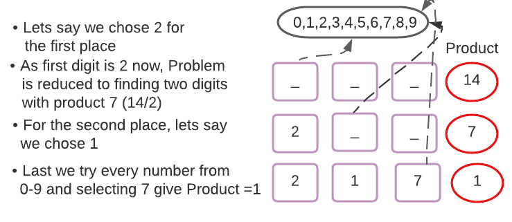
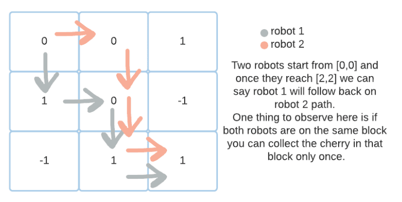
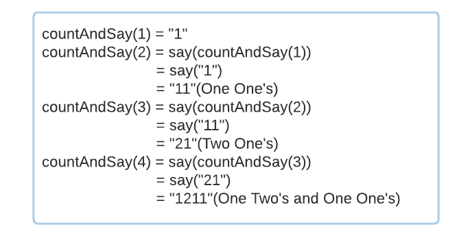
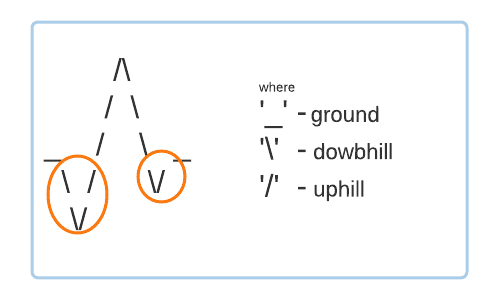
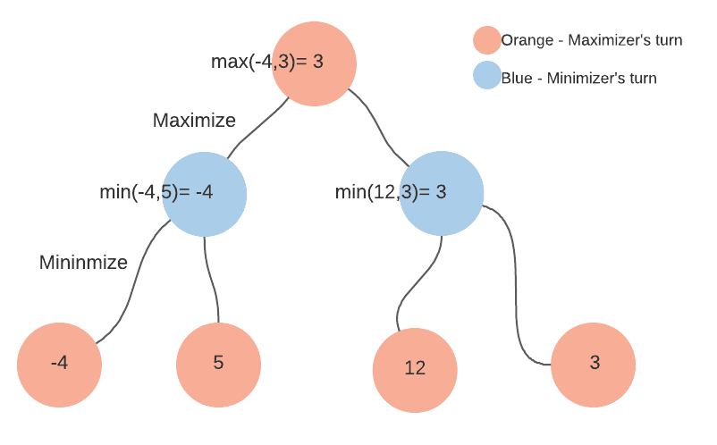

See my blogs

Count numbers from a given range whose product of digits is K
Dynamic programming is one of the most challenging ideas to learn at first, but it becomes very simple once you get the hang of it. The most basic technique for becoming proficient in DP is to improve learning by identifying patterns in the problems.....
Keep Reading

Cherry Pickup
One of the most exciting aspects of computer problems is how many various ways they can be solved. Based on several factors, one is superior to the other. And sorting through all of them to find the finest one is a journey .....
Keep Reading

Count and Say
There is an algorithm for anything, from inverting a binary tree to proposing somebody. Although computer algorithms are not novels, people read them as if they are. However, they are mathematics written uniquely. "An algorithm must be seen to be believed," said Sir Donald Knuth.....
Keep Reading

Count Valleys
Ram is a motorcyclist. He enjoys competing in races on challenging racetracks. An organization is organizing one such race. Ram is very excited about the race, and he has decided to keep track of the number of valleys he crosses during the run. Ram, on the other hand, isn't great with numbers but has a great me....
Keep Reading

Min-Max Algorithm
Often, programmers adopt a "recursive leap of faith strategy," which means one can assume the answer to subproblems while solving a complex one. At first, this seems doubtful to the point of being suspect. But as sir, Samuel Taylor said, “The willing suspension of disbelief for the moment, which constitutes poetic faith,” is needed during recursion. You’ve to trust your solution will give answers to subproblems.....
Keep ReadingNice To Meet You
"That willing suspension of disbelief for the moment, which constitutes poetic faith." Is the Faith which is needed while Doing Recursion.